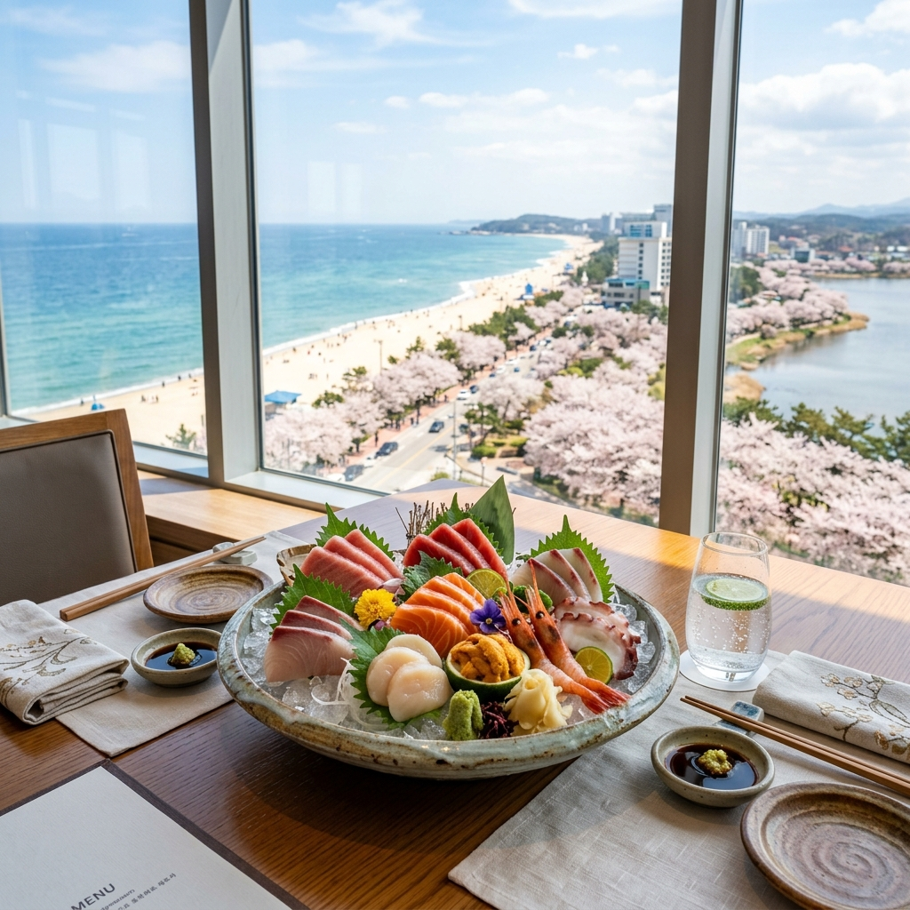

?�녕?�세?? 지�?강릉?� 그야말로 분홍�?천국?�니?? 경포?�수�??�라 ?�없???�쳐�?벚꽃 ?�널??걷다 보면 금세 ?�기가 지�?마련?�죠. ?��?�?관광�? ?�유??천편?�률?�인 ?�당?�에 ?�망?�신 ?�이 많으??겁니?? 강릉?� ?�실 ?�순??관�??�시�??�어, ?�해???�선???�산물과 ?�동 지�??�유???�백???�식 문화가 ?�아?�는 '미식???��?'?�기???�니??
?�늘 ?��? ?�개???�릴 리스?�는 광고???�존?�는 ?�한 곳이 ?�닙?�다. 강릉 ?��??�들??귀???�님???�셨????모시�?가??'진짜' 맛집?�로�??�선?�습?�다. 봄바?�과 ?�께 ?�날리는 벚꽃???�래?�서, 강릉??깊�? 맛까지 경험?�신?�면 ?�번 ?�행?� ?�러분의 ?�생 ?�이지?�서 가???�요로운 기억?�로 ?�을 것입?�다.
| ?�당 ?�형 | ?�??메뉴 | ?�징 �?매력 | ?�균 가격�? |
|---|---|---|---|
| 초당 ?�두부 | 짬뽕 ?�두부 / ?��? ?�두부 | 100% �?��콩과 ?�수�??�용??고소??/td> | 12,000??~ |
| 강릉 ?�칼�?�� | 고추??베이??칼국??/td> | ?�동 지�??�유???�큰?�고 진한 �?�� | 9,000??~ |
| ?�해?????�산�?/td> | ?�연??막회 / 물회 | ?�일 조업???�선???�감??쫄깃???�감 | ?��? (변?? |
| 강릉 꼬막 비빔�?/td> | 꼬막 무침 비빔�?/td> | 감칠�??�치???�념�??�짐??꼬막??조화 | 35,000??(2?? |
| 커피 거리 ?��???/td> | ?�제 ?�라??/ 커피 콩빵 | 강릉 커피???��??�을 ?��? ?�콤??마감 | 5,000??~ |

경포?�?�서 차로 5�?거리???�치??초당 ?�두부 마을?� 강릉 ?�행?�서 빼놓?????�는 ?��??�니?? ?�많?� ?�당 중에?�도 ?��??�들?� ?�극?�인 ?�념보다??�?본연??고소?�을 ?�린 '?��? ?�두부'�??�놓??곳을 ?�게 ?��??�니?? �?구워??몽�?몽�????�두부???�념?�을 ?�짝 ?�어 먹으�? ?�안 가???��???부?�러?�???�품?�죠.
바닷바람??몸이 ?�짝 ?�츠러?�었?�면, 강릉 ?�유???�칼�?��가 ?�답?�니?? ?�반?�인 멸치 ?�수 칼국?��? ?�리, 고추?�과 ?�장???�묘?�게 ?�어 ?�여???�수??깊고 진한 ?��?�??�랑?�니?? ?�텁?��? ?�으면서???�맛??깔끔?�게 매콤???�칼�?��???�행???�로�??�번???�려주는 '?�울 ?�드'?�??같습?�다. 면을 ??건져 먹�? ??찬물???�짝 ?�어 밥을 말아 먹는 것이 ?��??�들 ?�이???�수(精髓)�??�합?�다.
?�사 ?�에??강릉??커피 문화�?즐겨???�니?? ?�목 ?��???커피 거리??좋�?�? 최근?�는 경포?�수 근처???�옥??개조??감성 카페?�이 ???�기�??�고 ?�습?�다. 창밖?�로 ?�나�??�과 벚꽃???�우?�진 ?�경??보며 마시???�그?�처 ?�임???�떼??초당 ?�수??커피??강릉 ?�행???�룡?�정??찍어줍니?? 최근 ?�행?�는 '?�두부 ?�라?????�외??고소?�고 ?�콤??조합?�로 ?�이?��? 물론 ?�른?�의 ?�맛까�? ?�로?�고 ?�습?�다.
강릉??주요 맛집?��? ?�서 ?�급?�듯???��??�온?�리 ??/strong>?�나 강릉 지???�폐??강릉?�이 결제가 가?�한 곳이 많습?�다. 7~10% ?�인???�해 ?�비????부분을 ?�약?????�으??방문 ??충전 ?��?�?�??�인?�세?? ?�한, ?��?줄이 길더?�도 주�? ?��??�구�?막�? ?�는 배려가 ?�요?�며, ?�사 ???�오???�레기는 반드??지?�된 곳에 버려 깨끗?�고 ?�격 ?�는 관�?문화�??�께 만들?�갔?�면 ?�니??
벚꽃 ?�래?�서 즐기???????�사???�순??배�? 채우???�위�??�어, 그날??분위기�? ?�도, ?�께???�람???�음?�리�?기억?�는 ?�중??매개체�? ?�니?? ?��? ?�늘 추천???�린 강릉??맛집?�이 ?�러분의 ?�들?��? ?�욱 ?�성?�게 만들?�주�?진심?�로 바랍?�다. 맛있???�식�??�께?�는 경포?�??봄�? 분명 ?�러분의 가?�속???��? ?�채꽃과 분홍??벚꽃보다 ???�래?�록 ?�명?�게 ?�을 것입?�다.